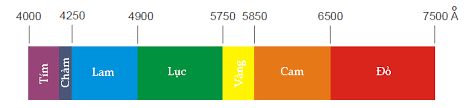

Tán sắc ánh sáng : là hiện tượng phân tách một chùm ánh sáng phức tạp thành các chùm sáng đơn sắc.
Quang phổ của ánh sáng trắng là dải sáng nhiều màu biến thiên từ đỏ đến tím (đỏ,cam,vàng,lục,lam,chàm,tím).

Ánh sáng đơn sắc : là ánh sáng có một mầu nhất định và không bị tán sắc khi truyền qua lăng kính.
Ánh sáng trắng : là hỗn hợp của nhiều ánh sáng đơn sáng có màu biến thiên liên tục từ đỏ đến tím.
Ứng dụng
- Giải thích một số hiện tượng tự nhiên như cầu vồng
- Ứng dụng trong máy quang phổ: phân tích một chùm sáng thành các chùm sáng đơn sắc cấu tạo lên nó.
B. Các dạng bài tập đặc trưng
Dạng 1: Các đặc trưng của tán sắc ánh sáng
Câu 1:Khi nói về ánh sáng đơn sắc, phát biểu nào sau đây đúng?
A. Ánh sáng đơn sắc bị đổi màu khi truyền qua lăng kính
B. Ánh sáng đơn sắc không bị thay đổi bước sóng khi truyền từ không khí vào lăng kính thủy tinh
C. Ánh sáng đơn sắc không bị tán sắc khi truyền qua lăng kính.
D. Ánh sáng đơn sắc bị tán sắc khi truyền qua lăng kính.
Câu 2:Trong các phát biểu sau đây, phát biểu nào là sai?
A. Ánh sáng do Mặt Trời phát ra là ánh sáng đơn sắc vì nó có màu trắng
B. Ánh sáng đơn sắc là ánh sáng không bị tán sắc khi đi qua lăng kính.
C. Hiện tượng chùm sáng trắng, khi đi qua một lăng kính, bị tách ra thành nhiều chùm sáng có màu sắc khác nhau là hiện tượng tán sắc
ánh sáng.
D. Ánh sáng trắng là tổng hợp (hỗn hợp) của nhiều ánh sáng đơn sắc có màu biến thiên liên tục từ đỏ tới tím.
Câu 3:Chiết suất của nước đối với các ánh sáng đơn sắc màu lục, màu đỏ, màu lam, màu tím lần lượt là n1,n2,n3,n4 . Sắp xếp theo thứ tự giảm dần các chiết suất này là
A. n4,n2,n3,n1
B. n1,n4,n2,n3
C. n1,n2,n3,n4
D. n4,n3,n1,n2
Câu 4:Một tấm gỗ tròn được chia thành 7 phần mỗi phần là một hình viên phân, trên mỗi phần ta sơn một trong 7 màu: đỏ, cam, vàng, lục, lam, chàm, tím. Khi tấm gỗ quay đủ nhanh quanh trục đi qua tâm và vuông góc với tấm gỗ, ta sẽ thấy tấm gỗ
A. có màu trắng
B. có màu đỏ
C. vẫn có đủ 7 màu
D. có màu vàng
Câu 5: Cầu vồng sau cơn mưa được tạo ra do hiện tượng
A. cảm ứng điện từ
B. tán sắc ánh sáng.
C. quang điện trong
D. quang – phát quang
Dạng 2: Bài toán về bước sóng, tia khúc xạ phản xạ
Câu 6: Ánh sáng đỏ có bước sóng trong chân không là 0,6563 μm, chiết suất của nước đối với ánh sáng đỏ là 1,3311. Trong nước, ánh sáng đỏ có bước sóng
A. 0,4931μm
B. 0,4415μm.
C. 0,4830μm.
D. 0,4549μm.
Câu 7: Một ánh sáng đơn sắc có bước sóng của nó trong không khí là 700 nm và trong một chất lỏng trong suốt là 560 nm. Chiết suất của chất lỏng đối với ánh sáng đó là
A. 0.8m/s
B. 5/4 m/s
C. 0.8
D. 5/4
Câu :8 Chiếu một tia sáng trắng hẹp từ không khí tới nước dưới góc tới 52 độ
. Tia khúc xạ màu tím lệch với tia khúc xạ màu đỏ góc 2 độ
. Tia khúc xạ màu đỏ hợp và tia phản xạ hợp thành góc vuông. Chiết suất của nước đối với ánh sáng đơn sắc tím là
A. 1,4.
B. 1,34.
C. 0,8.
D. 1,28.
LỜI GIẢI
1. Đáp án :B
Ánh sáng đơn sắc không bị tán sắc khi truyền qua lăng kính.
2. Đáp án :A
Ánh sáng Mặt Trời là ánh sáng trắng và là hỗn hợp của vô số ánh sáng đơn sắc có màu biến thiên liên tục từ đỏ đến tím
3. Đáp án :D
Chiết suất của các chất trong suốt biến thiên theo màu sắc của ánh sáng và tăng dần từ đỏ -> tím
4. Đáp án :A
Khi tấm gỗ quay đủ nhanh quanh trục đi qua tâm và vuông góc với tấm gỗ thì sẽ xảy ra hiện tượng tổng hợp ánh sáng trắng nên ta sẽ thấy tấm gố có màu trắng.
5. Đáp án :B
Cầu vồng được tạo ra do hiện tượng tán sắc ánh sáng
Hiện tượng nhiễu xạ là: hiện tượng ánh sáng truyền sai lệch so với sự truyền thẳng khi ánh sáng gặp vật cản.
Giải thích hiện tượng: để giải thích hiện tượng này tà thừa nhận: mỗi chùm sáng đơn sắc được coi là một sóng có bước sóng xác định.
II. Hiện tượng giao thoa ánh sáng
Hiện tượng giao thoa ánh sáng là: hiện tượng khi hai sóng ánh sáng kết hợp gặp nhau trong không gian, vùng hai sóng gặp nhau xuất hiện những vạch rất sáng (vân sáng)
xen kẽ những vạch tối (vân tối) gọi là vân giao thoa
Vị trí vân sáng
- Với a = S1S2; D khoảng cách từ mặt phẳng chứa S1S2 → Màu d1d2 là khoảng cách từ M đến S1S2
- Gọi λ: là bước sóng của ánh sáng đơn sắc.
⇒d2−d1=a.xD
- Vị trí vân sáng (cực đại): d2−d1=k.λ
⇒a.xsD=k.λ⇒xs=k.λ.Da,k=0,±1,±2
- Vị trí các vân tối (cực tiểu): d2−d1=(k′+12).λ
⇒a.xtD=(k′+12)λ⇒xt=(k′+12).λ.Da,k′∈Z
Khoảng vân: là khoảng cách giữa hai vân sáng (hay hai vân tối) liên tiếp nằm cạnh nhau
Công thức tính khoảng vân
i = xk+1 - xk = x'k+1 - x'k = λD/a
Ứng dụng
- Đo bước sóng của ánh sáng. Đo các đại lượng D,a,i khi đó bước sóng : λ = ia/D
B. Các dạng bài tập đặc trưng
Câu 1: Trong thí nghiệm Y-âng, cho a = 0.8mm, D = 1.2m. Biết rằng, từ vân sáng trung tâm tới vân tối thứ 5 cách nhau 1 khoảng 4.32mm. Hỏi bước sóng ánh sáng ở thí nghiệm trên là bao nhiêu?
A. 0.25μm
B. 0.75μm
C. 0.64μm
D. 0.32μm
Câu 2: Xét thí nghiệm giao thoa ánh sáng Y-âng, biết D = 2.4m. Khi sử dụng sóng ánh sáng có bước sóng thì 15 vân sáng liên tiếp cách nhau 1 khoảng 3cm. Khi sử dụng sóng ánh sáng có bước thì khoảng cách giữa 11 vân sáng liên tiếp cũng là 3cm. Vậy bằng bao nhiêu?
Câu 3: Trong một thí nghiệm về Giao thoa anhs sáng bằng khe I âng với ánh sáng đơn sắc λ = 0,7 μ m, khoảng cách giữa 2 khe s1,s2 là a = 0,35 mm, khoảng cách từ 2 khe đến màn quan sát là D = 1m, bề rộng của vùng có giao thoa là 13,5 mm. Số vân sáng, vân tối quan sát được trên màn là:
Máy quang phổ lăng kính là dụng cụ phân tích 1 chùm sáng phức tạp thành các thành phần đơn sắc(nhận biết cấu tạo của nguồn sáng) dựa trên hiện tượng tán sắc ánh sáng.
b. Cấu tạo
- Gồm 3 bộ phận chính: Ống chuẩn trực, hệ tán sắc, buồng tối (buồng ảnh)
- Ống chuẩn trực
+ Gồm TKHT L1, khe hẹp F đặt tại tiêu điểm chính của L1.
+ Tạo ra chùm song song.
+ Gồm 1 (hoặc 2, 3) lăng kính.
+ Phân tán chùm sáng thành những thành phần đơn sắc, song song.
- Buồng tối
+ Là một hộp kín, gồm TKHT L2, tấm phim ảnh K (hoặc kính ảnh) đặt ở mặt phẳng tiêu của L2.
+ Hứng ảnh của các thành phần đơn sắc khi qua lăng kính P: vạch quang phổ.
+ Tập hợp các vạch quang phổ chụp được làm thành quang phổ của nguồn F .
2. Quang phổ phát xạ
- Quang phổ phát xạ của một chất là quang phổ của ánh sáng do chất đó phát ra, khi được nung nóng đến nhiệt độ cao.
- Có thể chia thành 2 loại:
a. Quang phổ liên tục
- Là quang phổ mà trên đó không có vạch quang phổ, và chỉ gồm một dải có màu thay đổi một cách liên tục.
- Do mọi chất rắn, lỏng, khí có áp suất lớn phát ra khi bị nung nóng.
b. Quang phổ vạch
- Là quang phổ chỉ chứa những vạch sáng riêng lẻ, ngăn cách nhau bởi những khoảng tối.
- Do các chất khí ở áp suất thấp khi bị kích thích phát ra.
- Quang phổ vạch của các nguyên tố khác nhau thì rất khác nhau (số lượng các vạch, vị trí và độ sáng các vạch), đặc trưng cho nguyên tố đó.
3. Quang phổ hấp thụ
- Quang phổ liên tục, thiếu các bức xạ do bị dung dịch hấp thụ, được gọi là quang phổ hấp thụ của dung dịch.
- Các chất rắn, lỏng và khí đều cho quang phổ hấp thụ.
- Quang phổ hấp thụ của chất khí chỉ chứa các vạch hấp thụ. Quang phổ của chất lỏng và chất rắn chứa các “đám” gồm cách vạch hấp thụ nối tiếp nhau một cách liên tục.
Tia hồng ngoại, tia tử ngoại
1. Phát hiện tia hồng ngoại và tia tử ngoại
- Qua tác dụng lên cặp nhiệt điện và sự phát sáng huỳnh quang người ta nhận ra:
+ Ở ngoài quang phổ ánh sáng nhìn thấy được, ở cả hai đầu đỏ và tím, còn có những bức xạ mà mắt không trông thấy, nhưng nhờ mối hàn của cặp nhiệt điện và bột huỳnh quang mà ta phát hiện được.
+ Bức xạ không trông thấy ở ngoài vùng màu đỏ của quang phổ gọi là bức xạ (hay tia) hồng ngoại, ở ngoài vùng màu tím gọi là bức xạ (hay tia) tử ngoại.
2. Bản chất và tính chất chung của tia hồng ngoại và tia tử ngoại
a. Bản chất
- Tia hồng ngoại và tia tử ngoại có cùng bản chất với ánh sáng và đều là sóng điện từ.
- Tia hồng ngoại có bước sóng dài hơn 0,76mm đến khoảng vào mm.
- Tia tử ngoại có bước sóng ngắn hơn 0,38mm đến cở 10−9m.
b. Tính chất
3. Tia hồng ngoại
a. Cách tạo ra
- Những vật có nhiệt độ cao hơn nhiệt độ môi trường đều phát ra tia hồng ngoại.
- Để tạo ra chùm tia hồng ngoại định hướng, dung trong kĩ thuật, người ta thường dùng đèn điện dây tóc nhiệt độ thấp hoặc dùng điôt phát quang hồng ngoại.
b. Tính chất và công dụng
- Tính chất nỗi bật nhất là có tác dụng nhiệt rất mạnh, được dùng để sấy khô, sưởi ấm.
- Tia hồng ngoại có thể gây ra một số phản ứng hóa học. Nhờ đó người ta chế tạo được phim để chụp ảnh hồng ngoại vào ban đêm.
- Tia hồng ngoại cũng có thể biến điệu được như sóng điện từ cao tần. Tính chất này cho phép chế tạo được những bộ điều khiển từ xa.
- Tia hồng ngoại được ứng dụng nhiều trong quân sự: Ống dòm hồng ngoại, camêra hồng ngoại, tên lửa điều khiển bằng tia hồng ngoại, …
4. Tia tử ngoại
a. Nguồn tia tử ngoại
- Những vật có nhiệt độ cao từ 20000C trở lên đều phát tia tử ngoại. Nhiệt độ của vật càng cao thì phổ tử ngoại của vật càng kéo dài về phía sóng ngắn.
- Hồ quang điện, bề mặt của Mặt Trời là những nguồn tử ngoại mạnh.
- Nguồn tử ngoại trong phòng thí nghiệm, nhà máy thực phẩm, bện viện, … là đèn hơi thủy ngân.
b. Tính chất
- Tác dụng lên phim ảnh, do đó thường dùng phim ảnh để nghiên cứu tia tử ngoại.
- Kích thích sự phát quang của nhiều chất. Được áp dụng trong đèn huỳnh quang.
- Kích thích nhiều phản ứng hóa học. Được dùng làm tác nhân cho phản ứng hóa học.
- Làm ion hóa không khí và nhiều chất khí khác. Gây tác dụng quang điện.
- Có tác dụng sinh học: hủy hoại tế bào da, tế bào võng mạc, diệt khuẩn, diệt nấm mốc.
- Bị nước, thủy tinh … hấp thụ rất mạnh nhưng lại có thể truyền qua được thạch anh.
c. Sự hấp thụ tia tử ngoại
- Thủy tinh thông thường hấp thụ mạnh các tia tử ngoại. Thạch anh, nước và không khí hấp thụ mạnh các tia có bước sóng ngắn hơn 200nm.
- Tầng ôzôn hấp thụ hầu hết các tia có bước sóng dưới 300nm phát ra từ Mặt Trời.
d. Công dụng
- Trong y học tia tử ngoại được dùng để tiệt trùng các dụng cụ phẩu thuật, để chữa một số bệnh như bệnh còi xương.
- Trong công nghiệp thực phẩm, tia tử ngoại được dùng để tiệt trùng cho thực phẩm.
- Trong công nghiệp cơ khí, tia tử ngoại được dùng để tìm các vết nứt trên các bề mặt kim loại.
Tia X
1. Phát hiện tia X
Năm 1895, Rơnghen làm thí nghiệm với ống catốt (Ống Rơnghen) → Chùm tia catốt (chùm electron có năng lượng rất lớn) → có sự tồn tại của bức xạ lạ → Tia X.
2. Cách tạo ra tia X
→ Mỗi khi chùm tia catôt – tức là một chùm electron có năng lượng lớn – đập vào một vật rắn thì vật đó phát ra tia X.
Dùng ống Cu-lít-giơ để tạo ra tia X: Chùm electron phát ra từ catôt được tăng tốc trong điện trường mạnh, có năng lượng lớn đến đập vào anôt làm bằng kim loại có khối lượng nguyên tử lớn, điểm nóng chảy cao làm cho anôt phát ra tia X.
3. Bản chất và tính chất của tia X
Tia X là sóng điện từ có bước sóng nằm trong khoảng từ 10−11m đến 10−8m
b. Tính chất
- Tính chất nỗi bật và quan trọng nhất của tia X là khả năng đâm xuyên. Vật cản là các tấm kim loại năng như chì (Pb) làm giảm khả năng đâm xuyên của tia X.
- Tia X có bước sóng càng ngắn, khả năng đâm xuyên càng lớn; ta nói nó càng cứng.
- Tia X làm đen kính ảnh nên trong y tế, người ta thường chụp điện thay cho quan sát trực tiếp bằng mắt.
- Tia X làm phát quang một số chất. Các chất bị tia X làm phát quang mạnh được dùng làm màn quan sát khi chiếu điện.
- Tia X làm ion hóa không khí. Đo mức độ ion hóa của không khí có thể suy ra được liều lượng tia X. Tia X cũng có thể làm bật các electron ra khỏi kim loại.
- Tia X có tác dụng sinh lí: nó hủy hoại tế bào. Vì vậy người ta dùng tia X để chữa ung thư nông.
c. Công dụng
- Sử dụng trong y học để chẩn đoán và chữa trị một số bệnh.
- Sử dụng trong công nghiệp để tìm khuyết tật trong các vật đúc bằng kim loại và trong các tinh thể.
- Sử dụng trong giao thông để kiểm tra hành lí của hành khách đi máy bay.
- Sử dụng trong các phòng thí nghiệm để nghiên cứu thành phần và cấu trúc vật rắn.
4. Thang sóng điện từ
- Sóng vô tuyến, tia hồng ngoại, ánh sáng nhìn thấy, tia tử ngoại, tia X và tia gamma, đều có cùng bản chất, cùng là sóng điện từ, chỉ khác nhau về tần số (hay bước sóng). Các sóng này tạo thành một phổ liên tục gọi là thang sóng điện từ :
Sóng vô tuyến → Tia hồng ngoại → Ánh sáng nhìn thấy → Tia tử ngoại → Tia X → Tia Y là thang sóng điện từ (f tăng dần).
- Sự khác nhau về tần số (hay bước sóng) của các loại sóng điện từ dẫn đến sự khác nhau về tính chất và tác dụng của chúng.
- Thực ra, ranh giới giữa các vùng trong thang sóng điện từ là không rõ rệt.
.png)
 thì 15 vân sáng liên tiếp cách nhau 1 khoảng 3cm. Khi sử dụng sóng ánh sáng có bước
thì 15 vân sáng liên tiếp cách nhau 1 khoảng 3cm. Khi sử dụng sóng ánh sáng có bước 

.png)